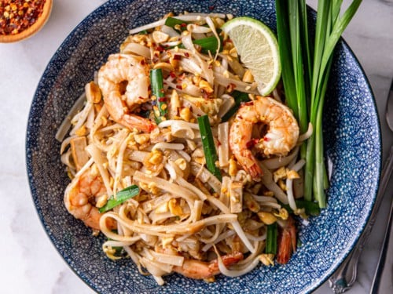

Pad Thai

Description
Pad Thai, often labeled as the quintessential Thai dish, captures the essence of Thai street food with its delightful medley of flavors and textures. It's a dish that seamlessly balances sweet, sour, salty, and spicy, weaving together a culinary tapestry that sings of Thailand's rich gastronomic heritage. Originating from the streets of Bangkok, Pad Thai has transcended borders, becoming an ambassador of Thai cuisine and gaining international acclaim.
Made with stir-fried rice noodles that are typically combined with eggs, tofu or shrimp, and flavored with tamarind paste, fish sauce, and chili, Pad Thai is both hearty and flavorful. The dish is then garnished with crushed peanuts, fresh lime, and cilantro, adding layers of crunch, zest, and aroma. Every bite promises a burst of flavors, transporting you to the bustling streets of Thailand.
Ingredients
- 200g flat rice noodles
- 150g tofu, cubed, or shrimp
- 2 eggs, lightly beaten
- 3 tablespoons tamarind paste
- 1 tablespoon fish sauce
- 1 tablespoon palm sugar or brown sugar
- 1 teaspoon chili powder (adjust to taste)
- 2 cloves garlic, minced
- 1 small red onion or shallot, thinly sliced
- A handful of bean sprouts
- 3 green onions, cut into 1-inch pieces
- 50g roasted peanuts, crushed
- Fresh cilantro, for garnish
- 1 lime, cut into wedges
- 2 tablespoons vegetable oil
Steps
- Start by soaking the flat rice noodles in warm water for about 20-30 minutes, or until they soften. Drain and set aside.
- In a small bowl, mix the tamarind paste, fish sauce, palm sugar, and chili powder to create the sauce. Adjust the flavor to your liking and set aside.
- Heat the vegetable oil in a wok or large frying pan over medium heat. Add the minced garlic and sliced onion, stir-frying until they're fragrant and translucent.
- Add the tofu cubes or shrimp to the pan and cook until they are golden brown or the shrimp turns pink.
- Push the tofu or shrimp to one side of the pan and pour the beaten eggs into the other side. Let the eggs sit for a few seconds and then scramble them until fully cooked.
- Add the soaked and drained rice noodles to the wok or pan. Pour the sauce over them and toss everything together, ensuring the noodles are well coated with the sauce.
- Stir-fry for an additional 4-5 minutes, or until the noodles are soft but not mushy.
- Stir in the bean sprouts and green onions, cooking for another minute.
- Transfer the Pad Thai to serving plates. Garnish with crushed peanuts, fresh cilantro, and a wedge of lime.
- Enjoy your traditional Pad Thai while it's warm!